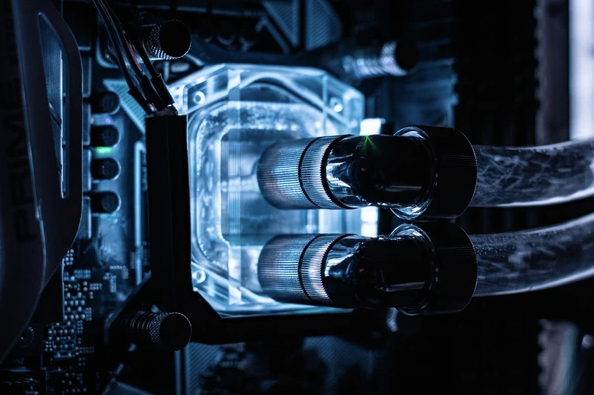

Gabriel Agyeman-Dua: 5 Computer Components
Network Interface Card(NIC)
What is an NIC?
A Network Interface Card(NIC) is a communication hardware component that connects a computer to a network, enabling it to receive and send data. NICs allow computers to communicate over local networks or the Internet. This enables file sharing, remote access, and online communication. NICs manage both wired(Ethernet) & wireless(Wi-Fi) network connections; they can also convert data from computers to a signal suitable for transmission over a network. NICs improve data transfer speed, network stability, and latency. For servers or gaming systems high performance NICS(gigabit or 10-gigabit) may enhance the performance in online tasks.
Sound Card
What is a Sound Card?
A Sound Card is an audio processing component that manages the input and output of sound signals in the computer. Sound cards convert digital audio data from computers into analog signals for speakers, headphones, etc, and convert analog input from microphones into digital data that can be recorded or processed. Sound cards enable audio playback and recording. This is important for communication, entertainment, gaming, and media production. Dedicated sound cards enhance audio quality, reduce CPU load, and enhance the user experience by making it more immersive. Integrated sound chips can cause distortion or lag when usage is high.
Digital Signal Processors(DSP)
What is a DPS?
A Digital Signal Processor(DSP) is a special microprocessor made for high-speed mathematical operations on digital signals. DSP's purpose is to enhance signal quality, reduce noise, and increase processing speed in systems like sound cards, cameras, etc. DSPs handle data faster and more efficiently than CPUs for specific signal tasks. DSPs process real-time signals such as audio, video, and sensor data using algorithms that can compress, filter, or transform data. DSPs improve overall computer performance, reducing latency in multimedia tasks and enhancing sound and image clarity.
Power Supply Unit(PSU)
What is a Power Supply Unit?
A PSU is an internal electrical component that provides power to all hardware components in the computer. A high-quality PSU ensures stable voltage regulation, allowing GPUs and CPUs to run efficiently. A poor power supply can cause random shutdowns and component failure. PSUs convert AC(alternating current) from a wall outlet into DC(Direct Current), which the internal components can use safely I. PSUs provide consistent and safe power delivery, protecting sensitive electronics from surges, spikes, or faulty voltages. This is vital for maintaining hardware stability and preventing corruption or circuit shortening.
Cooling Systems

What is a Cooling System?
Cooling systems are hardware components designed to regulate the heat produced by other components like CPU, GPU, etc. The most notable types of cooling systems are air cooling, liquid cooling, and passive cooling. With cooling systems, computer components like processors and graphics cards would lose performance efficiency, automatically slow down, or even shut off to avoid damage. Cooling enables longevity, stability, and consistent computer performance. With cooling systems to regulate temperature and prevent thermal buildup, overheating, throttling, or hardware damage can occur. Fans, heatsinks, and pumps circulate air or liquid to carry heat away from computer components. Effective cooling enables computer components to have an increased lifespan, higher lock speeds, and system reliability. From what I’ve found in higher-end systems, improved cooling enables overclocking, making components run faster than their base speed with enhanced performance.